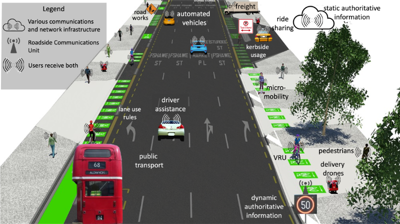

As illustrated below, these standards will include the provision of both static (stable) information (e.g., as contained in the vehicle code, posted on permanent signs, or marked on roadways) and dynamic information (e.g., variable speed limits). The scope of this standards effort focuses on the pipeline that will deliver rules of the road; cover virtually all modes of surface transport; and create and develop standards for information accuracy, reliability, timeliness, authentication, and traceability back to the authorizing agency. To the extent possible, the resulting standards will be compatible with existing data definitions.

To better ensure that these standards address both today's and tomorrow's needs, ISO/TC 204/WG 19 is reaching out to surface transport professionals and advocates to better understand stakeholder needs that should be incorporated. Specifically, ISO/TC 204/WG 19 is interested in hearing from stakeholders from the following perspectives:
To facilitate input from these various groups, ISO/TC 204/WG 19 has scheduled the following public workshops for the indicated topics. Each workshop is scheduled for 2 hours and will be held twice, once at 1400 UTC and once at 2200 UTC (NOTE: daylight saving / summer time changes might impact the start time in your local time zone). Participants are required to register for each workshop they wish to attend prior to signing in.
| Date | Start Time | Topic | Discussion Questions | |
|---|---|---|---|---|
| 28 September | 1400_UTC | Register | METR operations: focused on performance needs and constraints, operational modes, and the general process for distribution | Details |
| 2200 UTC | Register | |||
| 5 October | 1400 UTC | Register | METR operational structure: focused on the roles and relationships among stakeholders operating METR | Details |
| 2200 UTC | Register | |||
| 12 October | 1400 UTC | Register | Electronic regulation lifecycle: focused on the needs for electronic regulation creation, activation, and withdrawal | Details |
| 2200 UTC | Register | |||
| 19 October | 1400 UTC | Register | Electronic regulation conflicts: focused on resolution of potential conflicts between physical and electronic regulations or jurisdictional regulations | Details |
| 2200 UTC | Register | |||
| 26 October | 1400 UTC | Register | Vehicle operations: focused on driver assistance and driver automation technologies, and relating electronic information to the physical world | Details |
| 2200 UTC | Register | |||
| 2 November | 1400 UTC | Register | Vehicle information needs: focused on the information needs and expectations of driver assistance and driver automation technologies | Details |
| 2200 UTC | Register | |||
| 9 November | 1400 UTC | Register | Campus governance: focused on authorization, requirements, and responsibilities for universities, shopping centres, hospitals, and similar facilities | Details |
| 2200 UTC | Register | |||
| 16 November | 1400 UTC | Register | Campus regulations: focused on regulatory processes, parking regulations, legality and enforcement for universities, shopping centres, hospitals, and similar facilities | Details |
| 2200 UTC | Register | |||
| 23 November | 1400 UTC | Register | Roadwork and emergency operations: focused on evacuations, weather conditions, and work zones | Details |
| 2200 UTC | Register | |||
| 30 November | 1400 UTC | Register | Multimodal and micromobility operations: focused on ridesourcing, sidewalk delivery devices, and kerbside usage | Details |
| 2200 UTC | Register | |||
| 7 December | 1400 UTC | Register | METR deployment I: focused on regulator participation requirements, conformance levels, responsibilities, and encouraging participants | Details |
| 2200 UTC | Register | |||
| 14 December | 1400 UTC | Register | METR deployment II: focused on needs for the transition to METR, archiving, recovery, and oversight | Details |
| 2200 UTC | Register | |||
The links allow registrants to choose the topic areas most closely aligned with their roles and expertise; and to listen into other areas that might be of interest. Registrants can opt to join multiple workshops. For those workshops that are of greatest interest and/or prove to need more time, we may offer additional sessions at the end of this series.